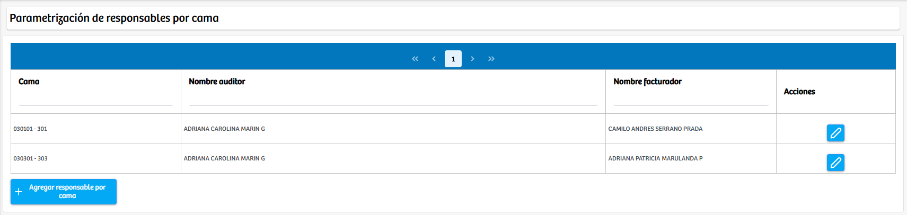

Modulos Sas-Web
Funcionalidades
Parametrizar Responsables Camas
El módulo Parametrizar Responsables Camas permite administrar y mantener actualizada la asignación de responsables asociados a cada cama dentro de la institución. En esta vista se despliega una tabla donde se listan todas las camas parametrizadas junto con el nombre del responsable auditor y el nombre del responsable facturador asignados a cada una. Esta información facilita la trazabilidad y el control interno sobre quién realiza auditorías y quién gestiona los procesos de facturación por cada cama registrada.
Cada fila del listado cuenta con una columna de Acciones, desde la cual es posible editar los responsables asignados mediante el botón de edición. Al seleccionar esta opción, el sistema permite actualizar los datos de forma sencilla, asegurando que la asignación se mantenga vigente y acorde a la operación del servicio.
Adicionalmente, el módulo incorpora un botón denominado “Agregar responsable por cama”, que habilita la creación de nuevos registros. Al presionarlo, se abre un modal donde el usuario puede seleccionar la cama correspondiente y asignar tanto el responsable facturador como el responsable auditor. Una vez completada la información requerida, el registro se guarda y pasa a formar parte del listado principal, integrándose de manera inmediata al control operativo del servicio.